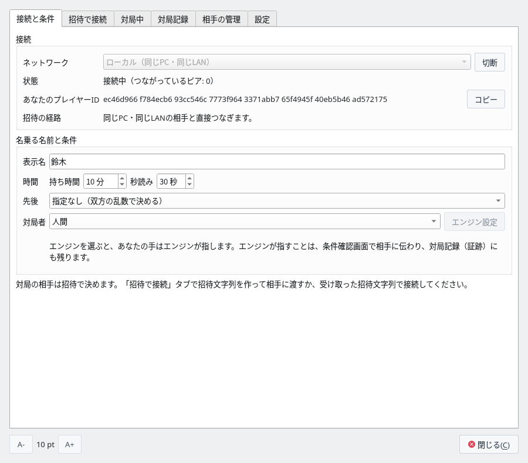
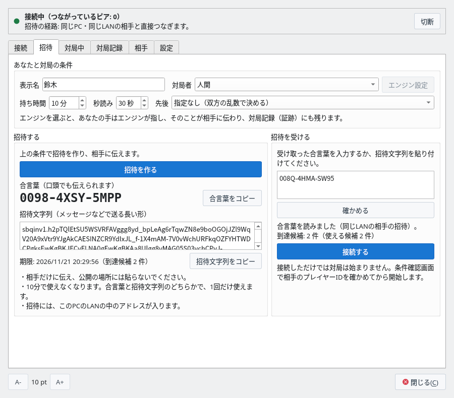

協力ノードなしで対局する
P2P対局で、同じPC・同じLANの相手と、招待文字列だけでつないで指します
P2P対局の準備（プレイヤー鍵・表示名）・画面・対局記録はP2P対局にあります。インターネット越しの相手とは協力ノードを使って対局するをご覧ください。
協力ノードなしで指せる相手
「同じPC・同じLAN」を選べば、協力ノードの登録は要りません
「接続」タブの「相手のいる場所」を「同じPC・同じLAN」にして接続すると、招待文字列に、このPCのLANの中のアドレス（192.168.… など）と、同じPCの中だけで使うアドレスが入ります。相手のPCからこのアドレスへそのまま届くので、間を取り持つ協力ノードは要りません。
| 相手 | つながるか |
|---|---|
| 同じPCで動かしている、もう1つのアプリ | つながります（同じPCで試す） |
| 同じLAN（家庭や職場の、同じルーターの下のネットワーク）にある別のPC | つながります（同じLANの別のPCと対局する） |
| インターネット上の相手（別の家・携帯電話の回線など） | つながりません。協力ノードを使って対局するをご覧ください |
このネットワークでは、接続元が同じPCかLANの中のアドレスの接続だけを受け付けます。インターネットから届いた接続は受け付けません。
- 「協力ノード」：登録しなくてかまいません。「同じPC・同じLAN」で「直接つなぐ（既定）」を選んでいる間は、欄も出ません（「この設定では要りません。…」と出ます）。
- 「相手とのつなぎ方」：「直接つなぐ（既定）」のままにします。「協力ノードの中継だけを使う」を選ぶと、LANの中の直接の接続も使わなくなり、協力ノードを登録していなければつながりません（「このままでは、中継を使えません」と出ます）。
- 相手に見えるアドレス：LANの中のアドレスだけです。インターネット上の IP アドレスは相手に渡りません。招待文字列には、このPCのLANの中のアドレスが入ります（VPN など、使っているネットワークの口のアドレスも含みます。回線のつながっていない仮想の機器のアドレスは、Linux では入りません）。合言葉にも、LANの中のアドレスが入ります。招待文字列と合言葉は、相手だけに伝えてください。
- 使用期限：ありません。ビルドから180日を過ぎても使えます（期限があるのは「インターネット」だけです）。
対局までの手順
2人とも「同じPC・同じLAN」で接続し、片方が作った合言葉を、もう片方が入力します
「対局」→「P2P対局…」でウィンドウを開きます。初めてのときは、プレイヤー鍵を作り、表示名を入れます（準備）。
「接続」タブで、「相手のいる場所」が「同じPC・同じLAN」、「相手とのつなぎ方」が「直接つなぐ（既定）」になっているのを確かめて（初めて開いたときは、こうなっています）、ウィンドウの上の「接続」を押します。上の帯が「接続中（つながっているピア: 0）」になり、その下に「招待の経路: 同じPC・同じLANの相手と直接つなぎます。」と出れば準備できています（相手とつながるまで、ピアは 0 のままです）。


「同じPC・同じLAN」で接続したところ
招待する人は、先に「招待」タブの「持ち時間」「秒読み」「先後」を決めます。この条件で対局します。
同じタブの「招待する」で「招待を作る」を押すと、12文字ほどの合言葉（K7MP-2QXD-9F3A の形）が大きな字で出ます。この合言葉を、相手だけに伝えます。同じ部屋にいれば口頭で、離れていれば電話やメッセージで伝えられます（「合言葉をコピー」でコピーできます）。招待は10分で使えなくなるので、作ったらすぐに伝えます。
合言葉の下の欄には、同じ招待の招待文字列（長い文字列）も出ます。文字のまま送るほうが楽なときや、合言葉でつながらないときは、「招待文字列をコピー」でコピーして、メッセージなど相手だけに届く方法で渡します。合言葉と招待文字列は同じ1つの招待なので、使えるのはどちらか一方で1回だけです。欄の下には、期限と到達候補の数が出ます。
招待された人は、「招待」タブの「招待を受ける」の欄に合言葉を入力して（招待文字列を受け取ったときは貼り付けて）、「確かめる」を押します。合言葉は、小文字でも、区切りの「-」を省いても読めます。「合言葉を読みました（同じLANの相手の招待）。」と到達候補の数が出たら（招待文字列のときは、招待した相手の PeerId・期限・到達候補の数が出たら）、「接続する」を押します。
招待された人は、持ち時間などの条件を決めなくてかまいません（招待した人の条件で対局します）。「表示名」だけは入れておきます。


左：招待する人が招待を作ったところ（合言葉と招待文字列） 右：招待された人が合言葉を確かめたところ
招待できる人数と回数
対局は2人で1局ずつです。招待文字列は、相手1人に1つずつ作ります
- 1人だけ：1つの招待文字列でつなげるのは1人だけです。相手がつないだ時点で、その招待文字列は使えなくなります。
- 合言葉と招待文字列は同じ招待：合言葉と招待文字列は、同じ1つの招待の2つの形です。どちらか一方で相手がつなぐと、もう一方も使えなくなります。期限（10分）も同じです。期限の過ぎた合言葉や、もう使われた合言葉を入れると、「相手につながりましたが、合言葉が受け付けられませんでした。…」と出ます。
- 10分で期限切れ：使わなくても、作ってから10分で使えなくなります（貼り付けた人には「招待文字列の期限が過ぎています。」と出ます）。
- 対局は1対1：3人以上で1局を指す仕組みや、ほかの人が観戦する仕組みはありません。
- 続けてもう1局：対局が終わると接続を閉じます。同じ相手ともう1局指すときは、新しい招待文字列を作って渡します。
- 同時に4つまで：招待文字列は、何人かに1つずつ作って渡せます。同時に有効にできるのは4つまでで、5つ目を作ると、いちばん古いものが使えなくなります。
- 1つのアプリで指せるのは一度に1局：最初につないできた人と条件の確認に進みます。その間と対局中は、ほかの人はつなげません（条件の確認中なら「相手は今、ほかの相手と交渉中か対局中です。」と出ます）。つなげなかった人には、対局が終わってから新しい招待文字列を渡してください。8人で4局を同時に指すときは、組ごとに片方が相手を招待します（対局は1対1、1つのアプリで一度に1局）。
- 対局の後も使える：対局が終わった後も、期限内でまだ使われていない招待文字列は使えます。
- 条件は最後に作ったときのもの：有効な招待文字列は、どれも、最後に「招待を作る」を押したときの表示名・持ち時間・秒読み・先後・対局者（人間かエンジンか）で対局します。条件を変えたいときは、変えてから作り直します。
- まとめて取り消す：ウィンドウの上の「切断」を押すと、有効な招待文字列をすべて使えなくします。
招待するのは2人のどちらでもかまいません。持ち時間と先後は、招待した人の条件になります。招待された人は、招待文字列を作る必要はありません。自分で作った招待文字列は、自分では使えません（「自分が作った招待文字列です。」と出ます）。
同じLANの別のPCとつながらないときは、招待する人を入れ替えると、つながることがあります。接続を待つのは招待した人のPCなので、そのPCのファイアウォールが関わるためです（次の節）。
同じLANの別のPCと対局する
招待した人のPCは、TCP と UDP の 48210 番ポートで接続を待ちます
招待した人のPCは、TCP と UDP の 48210 番ポートで、相手からの接続を待ちます（同じPCで2つ目のアプリを動かすと、2つ目は空いているポートを使います）。PCのファイアウォールがこのポートへの接続を止めていると、相手には「相手に接続できませんでした。」と出ます。
firewalld なら、次のコマンドで再起動まで許可できます。
$ sudo firewall-cmd --add-port=48210/tcp --add-port=48210/udpufw なら sudo ufw allow 48210 で許可できます（要らなくなったら sudo ufw delete allow 48210）。アプリは接続元がLANの中のアドレスの接続だけを受け付けるので、ポートを開けても、インターネットから届いた接続は断ります。
Windows では、待受を始めてもファイアウォールの確認の画面は出ません（通信を受け持つプロセスは、同じLANとの通信を許した入れ物（AppContainer）の中で動きます）。同じPCどうしの対局は確かめてあります。別のPCから届く接続が通るかは、Windows がそのネットワークを「プライベート」と扱っているかと、Windows のファイアウォールの設定によります（別のPCとの対局は、まだ確かめていません）。
macOS でも、同じPCどうしの対局は確かめてあります。別のPCとつなぐときは、macOS のファイアウォールを有効にしていると着信の許可を、初めてLANの相手と通信するときに「ローカルネットワーク」へのアクセスの許可を、macOS から求められることがあります（macOS のPCで招待し、同じLANの Linux のPCから接続する対局は確かめてあります）。
| 出る文・状態 | 確かめること |
|---|---|
| 「別のネットワークの招待文字列です。」 | 2人の「相手のいる場所」が違います。2人とも「同じPC・同じLAN」で接続し直し、招待文字列を作り直します。 |
| 「招待文字列の期限が過ぎています。」 | 作ってから10分たちました。招待文字列を作り直します。 |
| 「相手に接続できませんでした。」 | 招待した人のPCのファイアウォールを確かめます（上の1）。招待する人を入れ替えると、つながることもあります。 |
| 「招待の経路」に「中継を使えません。…」 | 「協力ノードの中継だけを使う」を選んでいます。「切断」を押してから、「接続」タブの「相手とのつなぎ方」を「直接つなぐ（既定）」に戻して、接続し直します。 |
| 「相手は今、ほかの相手と交渉中か対局中です。」 | 相手がほかの人と条件の確認中か対局中です。終わってから、新しい招待文字列をもらいます。 |
| ゲスト用の Wi-Fi など | つないだ機器どうしの通信を止めているネットワークでは、同じLANでもつながりません。 |
同じPCで試す
このアプリを同じPCでいくつか起動すると、1台で対局を試せます
このアプリを同じPCでいくつか起動して、それぞれで「P2P対局」を開くと、2つ目は自動で「2人目」、3つ目は「3人目」として開きます（同時に8つまで）。何人目かは、ウィンドウの題名と上の案内に出ます。アプリを1つだけ起動しているときは、いつも1人目です。
プレイヤー鍵（プレイヤーID）・表示名・対局記録・相手の一覧は、何人目かごとに別に保存します。両方とも「同じPC・同じLAN」で接続し、片方で作った合言葉をもう片方に入力すれば（招待文字列を貼り付けてもかまいません）、協力ノードなしで対局できます。同じPCの中の接続なので、ふつうはファイアウォールの設定も要りません。
よくある質問
協力ノードなしの対局で、よく出る疑問と、その答えです
要りません。「同じPC・同じLAN」では、招待文字列にこのPCのLANの中のアドレスが入り、相手のPCからそのまま届きます。インターネット上の相手とは、このしかたではつながりません（協力ノードを使って対局する）。
同じLANの相手には、合言葉が手軽です。12文字ほどなので、口頭や電話でも伝えられ、相手は手で入力できます。招待文字列は、同じ招待の長い形で、メッセージなどで文字のまま送るときに使います。合言葉に入るのは、このPCのLANの中のアドレスのうち4件までなので、合言葉でつながらないときは、招待文字列を試してください。どちらも同じ1つの招待なので、使えるのはどちらか一方で1回だけです。「インターネット」の招待では、合言葉に対応した協力ノードを使っているときに、別の形の合言葉（10文字。接続先は入りません）ができます（協力ノードを使って対局する）。
招待した人のPCのファイアウォールが、TCP と UDP の 48210 番ポートへの接続を止めていることがあります。ポートを開けるか、招待する人を入れ替えます（同じLANの別のPCと対局する）。ゲスト用の Wi-Fi など、つないだ機器どうしの通信を止めているネットワークでは、同じLANでもつながりません。
接続を待つのは、招待した人のPCだけだからです。招待された人のPCは自分から接続を始めるので、ふつうはファイアウォールに止められません。そのため、外から届く接続を止めていないほうのPCで招待すれば、つながります。たとえば、Linux のPCで招待して macOS のPCからつながらなかった組み合わせが、macOS のPCで招待して Linux のPCから接続すると対局できました（Linux では、firewalld や ufw が外から届く接続を止めていることがよくあります）。どちらのPCでも招待できるようにするには、それぞれのPCでポートを開けます（ファイアウォールでポートを開ける）。
1つの招待文字列でつなげるのは1人・1回だけで、作ってから10分で使えなくなります。同じ相手ともう1局指すときは、新しい招待文字列を作ります。何人かに渡すときは、1人に1つずつ作ります（同時に有効にできるのは4つまで）。指せるのは一度に1局です（招待できる人数と回数）。
招待文字列に入っている接続先の数です（8件まで）。「同じPC・同じLAN」では、このPCのLANの中のアドレス（ネットワークの口ごとに、UDP と TCP で1つずつ。VPN など、使っている口のアドレスも含み、回線のつながっていない仮想の機器のアドレスは、Linux では入りません）が入るので、PCによって数が違います。LANの中のアドレスが1つもないPCでは、代わりに同じPCの中だけで使うアドレスが入ります。
選びません。選ぶと、LANの中の直接の接続を使わなくなるので、協力ノードを登録していなければつながりません（「接続」タブに「このままでは、中継を使えません」と出ます）。「同じPC・同じLAN」で相手に見えるのは、LANの中のアドレスだけです。この設定は、インターネット越しの対局で、相手に IP アドレスを見せないためのものです（相手に IP アドレスを見せずに対局する）。
試せます。このアプリを同じPCで2つ起動し、それぞれで「P2P対局」を開くと、2つ目は自動で「2人目」として開きます。プレイヤー鍵・表示名・対局記録は、何人目かごとに別に保存します（同じPCで試す）。
接続は切れ、有効な招待文字列も使えなくなります。対局中に終了すると、同じ対局には戻れず、結果は確定しません（回線が切れたとき）。P2P対局のウィンドウを閉じただけなら、接続と対局は続きます。